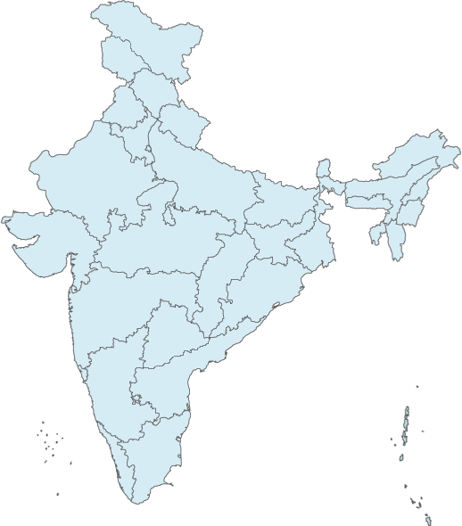

17
Anomalous Routes
4
High Severity
8
Medium Severity
5
Low Severity
ROUTE-LEVEL DETAIL
Sample Data
Anomalous Route Breakdown
Actual fare vs. expected range by route
| Route | Airline | Fare | Expected Range | Deviation | Severity |
|---|---|---|---|---|---|
| DEL → BOM | IndiGo | ₹18,450 | ₹5,200–₹8,000 | +131% | High |
| HYD → DEL | Air India | ₹16,200 | ₹7,000–₹9,500 | +71% | High |
| MAA → CCU | SpiceJet | ₹15,900 | ₹6,500–₹9,000 | +77% | High |
| AMD → BOM | IndiGo | ₹9,850 | ₹4,000–₹5,800 | +70% | High |
| DEL → COK | IndiGo | ₹19,650 | ₹9,000–₹12,000 | +64% | High |
| CCU → DEL | Air India | ₹15,800 | ₹7,500–₹10,000 | +58% | Medium |
| MAA → HYD | Air India | ₹6,600 | ₹3,200–₹4,600 | +43% | Medium |
| BLR → PNQ | IndiGo | ₹2,150 | ₹3,200–₹4,600 | -33% | Medium |
| AMD → BLR | SpiceJet | ₹3,050 | ₹5,000–₹7,000 | -39% | Medium |
| BOM → BLR | Air India | ₹2,150 | ₹3,500–₹5,000 | -39% | Medium |
| DEL → GOI | IndiGo | ₹11,200 | ₹6,000–₹8,500 | +32% | Medium |
| DEL → HYD | SpiceJet | ₹4,300 | ₹6,500–₹9,000 | -34% | Medium |
| BOM → GOI | Akasa Air | ₹5,700 | ₹3,000–₹4,200 | +36% | Medium |
| BLR → MAA | IndiGo | ₹2,450 | ₹2,600–₹3,800 | -6% | Low |
| COK → BOM | Air India Express | ₹6,300 | ₹6,800–₹9,200 | -7% | Low |
| PNQ → DEL | Air India | ₹7,700 | ₹8,200–₹10,500 | -6% | Low |
| HYD → BLR | IndiGo | ₹2,900 | ₹3,100–₹4,300 | -6% | Low |
ROUTE NETWORK
India Anomaly Map
Highest-deviation routes across India

DELHI
AHMEDABAD
MUMBAI
GOA
PUNE
BENGALURU
HYDERABAD
CHENNAI
KOLKATA
KOCHI
High
Medium
Anomaly Count / Route Deviation
Number of routes flagged as anomalous each month
20
15
10
5
0